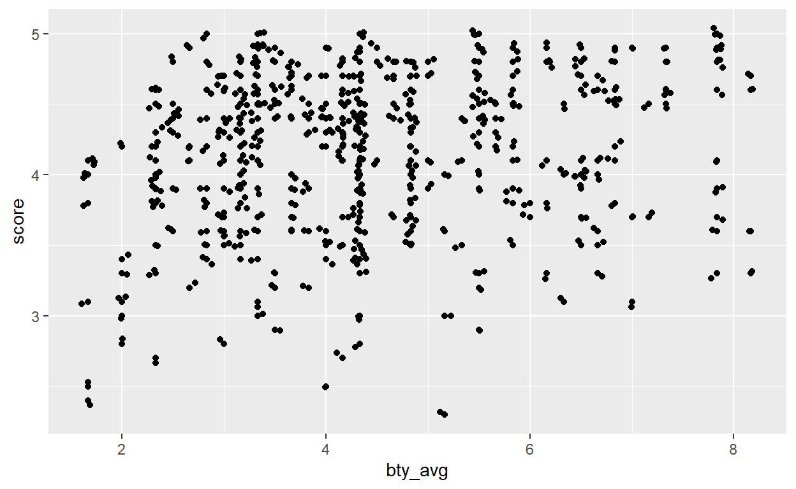
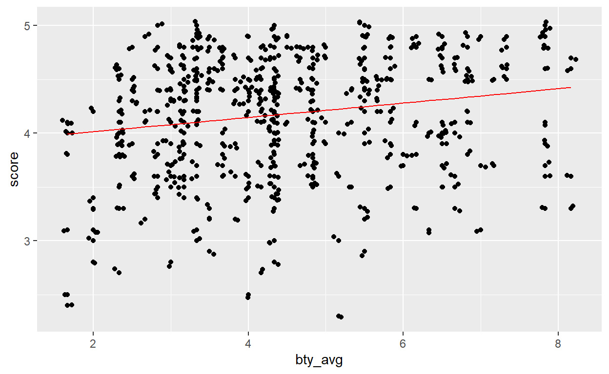

Table of Contents
Correction exercise
First of all, we load the libraries and open our dataset:
library(tidyverse)
library(openintro)
library(broom)
data <- openintro::evalsPart 1: Exploratory Data Analysis
Question 1: Visualize the distribution of score. Is the distribution skewed (i.e. does your data look normally distributed or are they concentrated towards certain values)? What does that tell you about how students rate courses? Is this what you expected to see? Why, or why not? Include any summary statistics and visualizations you use in your response.
First, we visualize the distribution of score by looking at its distribution. For that we can make a histogram. Here we can basically play around with score and visualise this variable against the for instance age, gender or pic_outfit.
ggplot(data, aes(x=score)) + geom_histogram() + theme_bw()
Even though score looks a bit skewed towards higher values, the shape of the histogram looks more or less normally distributed. This means that mainly the students grade the course generously. However, we need to look at the reasons explaining the low grades or the very high grades to get a more complete picture of the grading!
Data analysis is like doing some detective work. Once we have detected a pattern we need to investigate the reasons of this pattern.
To investigate the pattern we can have a look at how is score distributed relatively to the other variables by either making a boxplot (if the other variable is categorical or a scaterplot (if the other variable is numeric). To provide some examples here I plot the distribution of score against age, pic_outfit or gender
a <- ggplot(data, aes(y=score, x= pic_outfit)) + geom_boxplot() + theme_bw ()
b <- ggplot(data, aes(y=score, x= age)) + geom_point() + theme_bw ()
c <- ggplot(data, aes(y=score, x= gender)) + geom_boxplot() + theme_bw ()
cowplot::plot_grid(a,b,c, nrow = 1)To plot multiple ggplot objects we can use the function plot_grid from the library cowplot. Write ?plot_grid to get more information on the function!
On these plots we can see that teachers wearing formal outfits are graded higher, men teachers are graded higher than women teachers … It seems difficult to infer any trend for age - we would need to enhance the plot.
Question 2: Visualize and describe the relationship between score and bty_avg.
We make our plot of score versus bty_avg (diminutive of beauty average):
ggplot(data, aes(y=score, x= bty_avg)) + geom_point()It looks like score gets higher as bty_avg gets higher. Nevertheless the pattern does not look so clear when plotted as it is at the moment. We can do better ➡️
Question 3: Replot the scatterplot (the point cloud) from the previous question, but this time use geom_jitter()? What does “jitter” mean? What was misleading about the initial scatterplot?
To make the pattern appear clearer we can use geom_jitter, function which adds a small amount of variation to the location of each points. Thus, the points will not overlap anymore and we can get a clearer picture of the distribution of the points.
ggplot(data, aes(y=score, x= bty_avg)) + geom_point() + geom_jitter()
Our intuition now gets stronger: the “prettier” the teacher, the higher the students will grade her / him.
Part 2 - Linear regression with a numerical predictor
Question 4: Let’s see if the apparent trend in the plot is something more than natural variation. Fit a linear model called m_bty to predict average professor evaluation score by average beauty rating (bty_avg). Based on the regression output, write the linear model and interpret your model
We wish to “predict” or explain the variable score by the variable bty_avg. Thus, score is our response variable while bty_avg is a predictor or an explanatory variable (both terminology can be used, you will also encounter the word covariate).
Based on this, the equation of the model look like this:
\(score = \beta_0 + \beta_1 * beauty average + \epsilon\)
\(\epsilon\) being some noise normally distributed - recall the lecture on the residual values!
The model we are running aims to evaluate the effect of bty_avg and therefore tries to estimate the \(\beta_0\) and the \(\beta_1\) of out equation. We call them the parameters. We can run the model in R using the function lm():
# Fit the linear model
m_bty <- lm(score ~ bty_avg, data = data)
# Get a look at the model
summary(m_bty)
Call:
lm(formula = score ~ bty_avg, data = data)
Residuals:
Min 1Q Median 3Q Max
-1.9246 -0.3690 0.1420 0.3977 0.9309
Coefficients:
Estimate Std. Error t value Pr(>|t|)
(Intercept) 3.88034 0.07614 50.96 < 2e-16 ***
bty_avg 0.06664 0.01629 4.09 5.08e-05 ***
---
Signif. codes: 0 '***' 0.001 '**' 0.01 '*' 0.05 '.' 0.1 ' ' 1
Residual standard error: 0.5348 on 461 degrees of freedom
Multiple R-squared: 0.03502, Adjusted R-squared: 0.03293
F-statistic: 16.73 on 1 and 461 DF, p-value: 5.083e-05If, like me, you find the summary of the model overwhelming you can use the function tidy from the broom package. This gives us a more structured output at the parameters values.
broom::tidy(m_bty)
# A tibble: 2 x 5
term estimate std.error statistic p.value
<chr> <dbl> <dbl> <dbl> <dbl>
1 (Intercept) 3.88 0.0761 51.0 1.56e-191
2 bty_avg 0.0666 0.0163 4.09 5.08e- 5In the model output the (Intercept) represents the \(\beta_0\) of our equation while the bty_avg represents the \(\beta_1\) of the model.
Given the estimated values of our parameters (be careful about the vocabulary here!) we can re-write the equation previously defined:
\(score = 3.88 + 0.0666 * beauty average + \epsilon\)
This means that if the teacher has a bty_avg of 0, he will still get, on average, a grade of 3.88. Moreover, for 1 more unit of bty_avg, the grade of the teacher will increase by 0.0666. Our intuition is thus confirmed: the prettier the teacher, the higher will be her / his grade on average.
Question 5: Replot your visualization from Question 3, and add the regression line to this plot in orange color. Turn off the shading for the uncertainty of the line.
We have 2 ways of plotting the regression line. The easiest is to use the geom_smooth function from ggplot2. However, we need to tweak a bit its arguments. First, we want the line resulting from a linear model so we need to specify model = 'lm' in the function. By default, geom_smooth use another kind of model (a generalised additive model which is a fancier version of the linear model). Then we need to turn off the uncertainty of the line. We need the specify the argument se = FALSE (se stands for standard error).
ggplot(data, aes(y=score, x= bty_avg)) +
geom_point() +
geom_smooth(method = 'lm', se = FALSE)Another way of making the line is by “predicting” what the score would be based on the parameter values estimated by our linear model. Basically, the predict function will replace the \(beautyaverage\) of out equation by its value and will compute the score.
For instance, based on the linear model I can predict what the score would be for a bty_avg value of 2:
\(score = 3.88 + 0.0666 * beauty average\) \(score = 3.88 + 0.0666 * 2\) \(score = 4.0132\)
The predict function does this automatically. In the code below, we create a new column score_pred with the predict function, then we plot the data in a first part and we plot the regression line obtained through the predictions.

As you can see, both method gives the same output.
Question 6: Interpret the slope of the linear model in context of the data.
For a 1 unit increase in bty_avg the score will increase by 0.066 on average
Question 7: Interpret the intercept of the linear model in context of the data. Comment on whether or not the intercept makes sense in this context.
For a bty_avg of 0, the score will be of 3.88
\(score = 3.88 + 0.0666 * beauty average\) \(score = 3.88 + 0.0666 * 0\) \(score = 3.88\)
Part 3: Linear regression with a categorical predictor
Question 8: Fit a new linear model called m_gen to predict average professor evaluation score based on gender of the professor. Based on the regression output, write the linear model and interpret the slope and intercept in context of the data.
First of all, we need to code gender as a dummy variable. This means that we will recode the categoris male and female into numbers. The lm function does this automatically. In my opinion and from my experience it is preferable to recode the variable yourself so the process is more transparent.
In the code below we recode female as 1 and male as 0. I use the function ifelse which takes 3 arguments:
- The condition: does X = Z?
- The outcome if the condition is true
- The outcome if the condition is false
We translate the code below as “if gender = famale then the value is 1, otherwise the value is 0”.
data$gender_recode <- ifelse(data$gender == 'female', 1, 0)Now we can fit the model:
m_gen <- lm(score ~ gender_recode, data = data)
# Generate a tidy output with the tidy function from the broom package:
broom::tidy(m_gen)
# A tibble: 2 x 5
term estimate std.error statistic p.value
<chr> <dbl> <dbl> <dbl> <dbl>
1 (Intercept) 4.23 0.0330 128. 0
2 gender_recode -0.142 0.0508 -2.78 0.00558The model that we just fitted has the form:
\(score = \beta_0 + \beta_1 * gender + \epsilon\)
We can interpret the \(\beta_0\) as the average score for male professor and \(\beta_1\) the “additional value to score” if the professor is a female.
Question 9: What is the equation of the line corresponding to male professors? What is it for female professors?
We can formalise what we previously said by giving the equation for both male and females:
Female:
\(score_{female} = \beta_0 + \beta_1 * 1\)
\(score_{female} = 4.2 - 0.14 * 1\)
\(score_{female} = 4.06\)
Male:
\(score_{male} = \beta_0 + \beta_1 * 0\)
\(score_{male} = 4.2 - 0.14 * 0\)
\(score_{male} = 4.2\)
On average, the students will grade a male teacher 4.2 while they will grade a female professor 4.06.
Exercise continuation
For this lab and the next one you will continue to analyze the eval dataset. Here, you will still work with categorical predictors and learn how to interpret it. It is very important to understand how to interpret models with categorical data, especially in the social sciences where you will be confronted to plenty of them. Here are the questions for the next lab:
Question 10: Fit a new linear model called m_rank to predict average professor evaluation score based on rank of the professor. Based on the regression output, write the linear model and interpret the slopes and intercept in context of the data.
Hint: this time there is 3 categories …
Question 11: Create a new variable called rank_relevel where "tenure track" is the baseline level.
Hint: the baseline level would be the intercept …
Question 12: Fit a new linear model called m_rank_relevel to predict average professor evaluation score based on rank_relevel of the professor. This is the new (releveled) variable you created in Exercise 13. Based on the regression output, write the linear model and interpret the slopes and intercept in context of the data. Also determine and interpret the R2 of the model.
Question 13: Create another new variable called tenure_eligible that labels "teaching" faculty as “no” and labels "tenure track" and "tenured" faculty as "yes".
Question 14: Fit a new linear model called m_tenure_eligible to predict average professor evaluation score based on tenure_eligibleness of the professor. This is the new (regrouped) variable you created in Exercise 15. Based on the regression output, write the linear model and interpret the slopes and intercept in context of the data. Also determine and interpret the R2 of the model.